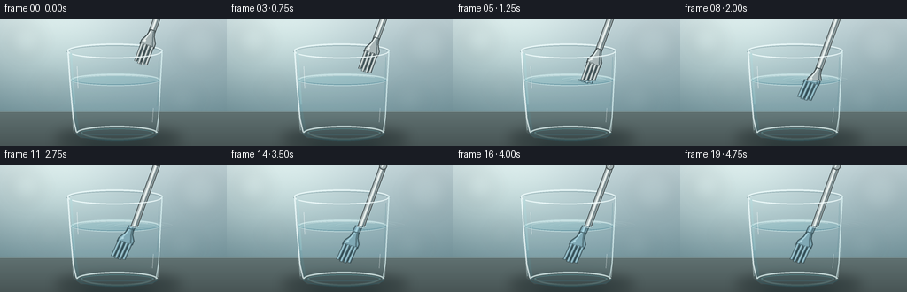
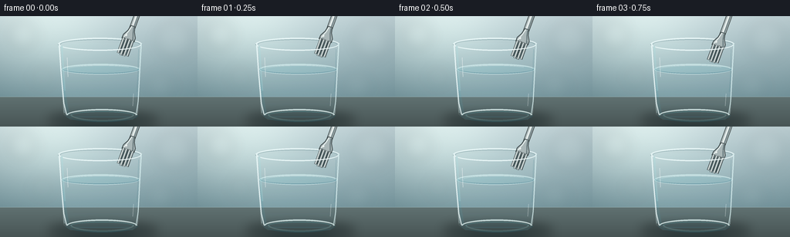
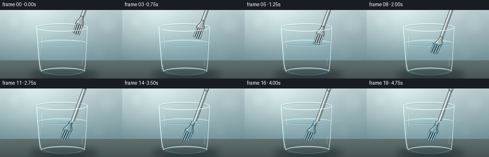
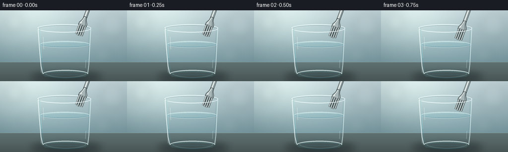

CODING AGENTS AS PIXEL WORLD MODELS
traex/GPT-5.6-Sol · phygen_074
点击播放 · 原生 RGB 像素
逐轮保存的候选
回放视频、检查图与代码变化。
每份候选均可单独播放。实际图片检查记录在下方工具轨迹中。
候选 01播放与检查图
点击播放 · 原生 RGB 像素


展开代码变化
--- 上一保存版本
+++ 本次保存版本
@@ -0,0 +1,220 @@
+from pathlib import Path
+import math
+import numpy as np
+from PIL import Image, ImageDraw, ImageFilter
+import cv2
+import artifact_io
+
+# Procedural, supersampled studio close-up of a fork entering a glass of water.
+W, H, N, FPS = 256, 144, 20, 4.0
+S = 4
+w, h = W*S, H*S
+rng = np.random.default_rng(7401)
+
+def sc(v): return int(round(v*S))
+def pts(seq): return [(sc(x), sc(y)) for x,y in seq]
+def rgba_layer(): return Image.new('RGBA', (w,h), (0,0,0,0))
+def smoothstep(x):
+ x=max(0.0,min(1.0,x)); return x*x*(3-2*x)
+
+def alpha_comp(base, overlay):
+ return Image.alpha_composite(base, overlay)
+
+def make_background(frame):
+ yy,xx=np.mgrid[0:h,0:w]
+ # Bright, subtly warm studio background; per-frame fixed texture avoids flicker.
+ top=np.array([197,215,219.],np.float32)
+ bot=np.array([112,145,153.],np.float32)
+ q=np.clip(yy/(h*.82),0,1)[...,None]
+ arr=top*(1-q)+bot*q
+ # soft light from upper left and darker right edge
+ glow=np.exp(-((xx-.24*w)**2/(.34*w)**2+(yy-.12*h)**2/(.45*h)**2))[...,None]
+ arr += glow*np.array([31,30,25])
+ vign=( ((xx-w*.52)/(w*.72))**2 + ((yy-h*.48)/(h*.92))**2 )[...,None]
+ arr -= 17*np.clip(vign,0,1)
+ noise=rng.normal(0,.7,(h,w,1))
+ arr=np.clip(arr+noise,0,255).astype(np.uint8)
+ im=Image.fromarray(arr,'RGB').convert('RGBA')
+ # out-of-focus highlights
+ b=rgba_layer(); d=ImageDraw.Draw(b)
+ for cx,cy,r,a in [(29,25,18,22),(226,31,24,17),(55,79,12,13),(207,91,18,10)]:
+ d.ellipse((sc(cx-r),sc(cy-r),sc(cx+r),sc(cy+r)),fill=(245,252,247,a))
+ b=b.filter(ImageFilter.GaussianBlur(sc(8)))
+ im=alpha_comp(im,b)
+ # tabletop
+ tab=rgba_layer(); td=ImageDraw.Draw(tab)
+ td.rectangle((0,sc(105),w,h),fill=(73,91,93,255))
+ # horizontal soft sheen
+ for y in range(sc(105),h):
+ rel=(y-sc(105))/max(1,h-sc(105))
+ col=(95-int(24*rel),112-int(28*rel),112-int(28*rel),255)
+ td.line((0,y,w,y),fill=col)
+ td.line((0,sc(105),w,sc(105)),fill=(188,205,199,95),width=sc(.5))
+ im=alpha_comp(im,tab)
+ # cast shadow beneath glass
+ sh=rgba_layer(); sd=ImageDraw.Draw(sh)
+ sd.ellipse((sc(62),sc(125),sc(205),sc(145)),fill=(14,26,28,115))
+ sh=sh.filter(ImageFilter.GaussianBlur(sc(7)))
+ return alpha_comp(im,sh)
+
+def draw_back_glass(base):
+ lay=rgba_layer(); d=ImageDraw.Draw(lay)
+ # Back wall: almost invisible transparent glass boundaries
+ d.polygon(pts([(75,35),(184,35),(178,129),(172,135),(91,135),(82,128)]),fill=(205,237,240,18))
+ # rear half of lip
+ d.arc((sc(75),sc(28),sc(184),sc(45)),180,360,fill=(242,255,255,178),width=sc(2.0))
+ d.arc((sc(78),sc(30),sc(181),sc(43)),180,360,fill=(84,121,129,92),width=sc(1.0))
+ # rear side edges
+ d.line(pts([(76,36),(83,126)]),fill=(225,249,249,108),width=sc(1.1))
+ d.line(pts([(183,36),(178,127)]),fill=(222,246,247,90),width=sc(1.2))
+ return alpha_comp(base,lay)
+
+def draw_water(base):
+ # transparent water body, darker near base and sides
+ lay=rgba_layer(); d=ImageDraw.Draw(lay)
+ body=pts([(80,69),(181,69),(177,127),(171,132),(92,132),(84,126)])
+ d.polygon(body,fill=(64,157,180,37))
+ # vertical depth grading clipped approximately to trapezoid
+ for yy in np.linspace(71,130,60):
+ rel=(yy-71)/59
+ xl=80+(yy-69)*.17; xr=181-(yy-69)*.07
+ d.line((sc(xl),sc(yy),sc(xr),sc(yy)),fill=(39,126,154,int(3+10*rel)),width=sc(1.1))
+ # water surface ellipse
+ d.ellipse((sc(80),sc(62),sc(181),sc(76)),fill=(120,205,216,42),outline=(220,250,250,122),width=sc(1))
+ d.arc((sc(81),sc(63),sc(180),sc(75)),0,180,fill=(54,123,143,108),width=sc(1.0))
+ d.arc((sc(82),sc(63),sc(179),sc(74)),180,360,fill=(232,255,255,145),width=sc(1.0))
+ # caustic at base
+ d.arc((sc(91),sc(119),sc(174),sc(137)),4,176,fill=(163,229,230,47),width=sc(2))
+ return alpha_comp(base,lay)
+
+def local_point(tipx,tipy,p,v):
+ # d points down-left along the fork, n is across the fork
+ dx,dy=-0.342,0.940
+ nx,ny=dy,-dx
+ return ((tipx-dx*v+nx*p)*S,(tipy-dy*v+ny*p)*S)
+
+def draw_fork(tipx,tipy):
+ lay=rgba_layer(); d=ImageDraw.Draw(lay)
+ P=lambda p,v: local_point(tipx,tipy,p,v)
+ # handle, rendered broad-to-fine for a beveled chrome appearance
+ handle=[P(0,38),P(0,126)]
+ d.line(handle,fill=(61,71,72,255),width=sc(8.0),joint='curve')
+ d.line(handle,fill=(174,186,187,255),width=sc(6.5),joint='curve')
+ d.line([P(-.7,39),P(-.7,126)],fill=(238,244,241,235),width=sc(1.65))
+ d.line([P(1.65,39),P(1.65,126)],fill=(87,103,106,190),width=sc(1.2))
+ # subtly widened rounded butt of handle (usually partly out of frame)
+ bx,by=P(0,122)
+ d.ellipse((int(bx-sc(4.4)),int(by-sc(4.4)),int(bx+sc(4.4)),int(by+sc(4.4))),fill=(159,173,174,255),outline=(72,82,83,255),width=sc(1))
+ d.line([P(-.8,120),P(-.8,124)],fill=(238,244,242,220),width=sc(1.3))
+ # fork shoulder, broad at tine roots and tapering to neck
+ shoulder=[P(-8.2,21.5),P(-8.0,27),P(-4.2,34),P(-2.6,41),P(2.6,41),P(4.2,34),P(8.0,27),P(8.2,21.5)]
+ d.polygon(shoulder,fill=(169,182,183,255))
+ d.line(shoulder+[shoulder[0]],fill=(66,78,80,255),width=sc(1.0),joint='curve')
+ # shoulder bevels
+ d.line([P(-6.6,23),P(-3.0,33),P(-1.3,40)],fill=(236,243,240,210),width=sc(1.3))
+ d.line([P(6.5,23),P(3.0,33),P(1.6,40)],fill=(82,98,101,190),width=sc(1.4))
+ # four distinct tines; central two project just a touch farther
+ offsets=[-6.2,-2.1,2.1,6.2]
+ tips_v=[1.4,0.0,0.0,1.4]
+ for j,(p,v0) in enumerate(zip(offsets,tips_v)):
+ # dark edge, steel core and a needle highlight
+ d.line([P(p,v0),P(p,23.4)],fill=(56,67,69,255),width=sc(3.15))
+ d.line([P(p,v0+.2),P(p,23.2)],fill=(181,193,193,255),width=sc(2.05))
+ d.line([P(p-.38,v0+1.2),P(p-.38,22.0)],fill=(244,248,244,225),width=sc(.62))
+ # dark inner slot makes the fork unmistakable
+ if j<3:
+ d.line([P(p+2.05,2.5),P(p+2.05,20.5)],fill=(41,65,70,210),width=sc(.68))
+ # small glint on head
+ gx,gy=P(-4.5,27)
+ d.ellipse((int(gx-sc(1.2)),int(gy-sc(1.2)),int(gx+sc(1.2)),int(gy+sc(1.2))),fill=(255,255,250,180))
+ return lay
+
+def fork_split_layers(full, tipx, tipy, water_y=69):
+ arr=np.array(full)
+ # Above-water section is optically straight.
+ above=arr.copy(); above[sc(water_y)+2:,:,:]=0
+ # Refraction: submerged part appears shallower, slightly laterally displaced,
+ # and a little wider. This creates a crisp visible kink at the interface.
+ xi = tipx + 0.342*(tipy-water_y)/0.940
+ Y,X=np.mgrid[0:h,0:w].astype(np.float32)
+ sy=sc(water_y)+(Y-sc(water_y))/0.875
+ sx=sc(xi)+(X-sc(xi)+sc(2.4))/1.075
+ warped=cv2.remap(arr,sx,sy,interpolation=cv2.INTER_LINEAR,borderMode=cv2.BORDER_CONSTANT,borderValue=0)
+ warped[:sc(water_y)-1,:,:]=0
+ # cool and soften submerged silver, as seen through water
+ rgb=warped[:,:,:3].astype(np.float32)
+ rgb=rgb*np.array([.72,.86,.91])[None,None,:]+np.array([7,13,15])[None,None,:]
+ warped[:,:,:3]=np.clip(rgb,0,255).astype(np.uint8)
+ underwater=Image.fromarray(warped,'RGBA').filter(ImageFilter.GaussianBlur(sc(.16)))
+ return Image.fromarray(above,'RGBA'),underwater,xi
+
+def draw_surface_details(base, xi, tipy, frame):
+ lay=rgba_layer(); d=ImageDraw.Draw(lay)
+ # Contact begins around frame 4. Ripples expand and relax naturally.
+ penetration=max(0.0,tipy-68.0)
+ if penetration>0:
+ age=max(0,frame-4)
+ amp=math.exp(-age/8.5)
+ for k in range(3):
+ rw=8+age*2.15+k*10
+ rh=rw*.115
+ alpha=int(max(0,112*amp*(1-k*.22)))
+ d.arc((sc(xi-rw),sc(69-rh),sc(xi+rw),sc(69+rh)),190,350,fill=(235,255,255,alpha),width=sc(.8))
+ d.arc((sc(xi-rw),sc(69-rh),sc(xi+rw),sc(69+rh)),8,168,fill=(35,112,139,int(alpha*.62)),width=sc(.7))
+ # tiny meniscus hugging the metal
+ d.arc((sc(xi-5),sc(66.7),sc(xi+5),sc(71.3)),5,175,fill=(244,255,255,170),width=sc(1))
+ d.arc((sc(xi-4),sc(67),sc(xi+4),sc(71)),185,350,fill=(39,107,129,110),width=sc(.8))
+ # reflected window streak across the surface
+ d.arc((sc(88),sc(64),sc(173),sc(73)),192,329,fill=(247,255,252,76),width=sc(1.0))
+ return alpha_comp(base,lay)
+
+def draw_front_glass(base):
+ lay=rgba_layer(); d=ImageDraw.Draw(lay)
+ # front lip and double edge
+ d.arc((sc(75),sc(28),sc(184),sc(45)),0,180,fill=(78,108,115,116),width=sc(1.0))
+ d.arc((sc(76),sc(29),sc(183),sc(45)),2,178,fill=(244,255,255,205),width=sc(1.45))
+ # side highlights with slight irregularity/reflection
+ d.line(pts([(76.5,36),(79,74),(82.5,113),(86,128)]),fill=(245,255,255,182),width=sc(1.4))
+ d.line(pts([(80,39),(82,70),(84,97)]),fill=(162,222,226,62),width=sc(2.3))
+ d.line(pts([(183,36),(181,72),(179,111),(176,129)]),fill=(226,250,250,155),width=sc(1.35))
+ d.line(pts([(179.5,43),(178.5,81),(177,99)]),fill=(75,136,147,70),width=sc(.8))
+ # luminous front base, heavy glass
+ d.arc((sc(85),sc(120),sc(179),sc(138)),2,178,fill=(49,92,101,114),width=sc(1.4))
+ d.arc((sc(86),sc(121),sc(178),sc(137)),180,358,fill=(231,251,249,187),width=sc(2.0))
+ d.arc((sc(91),sc(124),sc(173),sc(134)),180,356,fill=(91,172,178,92),width=sc(1.0))
+ # narrow specular glints
+ d.line(pts([(87,54),(88,79)]),fill=(255,255,255,120),width=sc(.7))
+ d.line(pts([(173,101),(172,117)]),fill=(250,255,255,92),width=sc(.8))
+ return alpha_comp(base,lay)
+
+def render_frame(i):
+ # Fork is lowered along its own axis, then held still after settling.
+ p=smoothstep(i/13.0)
+ tipy=51.5+64.5*p
+ tipx=158.5-23.5*p
+ if i>=14:
+ # barely perceptible settling, without reversing the action
+ tipy += .35*(1-math.exp(-(i-13)/2.5))
+ tipx -= .12*(1-math.exp(-(i-13)/2.5))
+ base=make_background(i)
+ base=draw_back_glass(base)
+ base=draw_water(base)
+ fork=draw_fork(tipx,tipy)
+ above,under,xi=fork_split_layers(fork,tipx,tipy)
+ # submerged steel is behind the surface/front wall
+ base=alpha_comp(base,under)
+ base=draw_surface_details(base,xi,tipy,i)
+ # dry handle and dry tines remain razor-sharp
+ base=alpha_comp(base,above)
+ base=draw_front_glass(base)
+ # downsample for clean antialiasing
+ out=base.convert('RGB').resize((W,H),Image.Resampling.LANCZOS)
+ return np.asarray(out,dtype=np.uint8)
+
+def main():
+ frames=np.stack([render_frame(i) for i in range(N)],axis=0)
+ artifact_io.save(frames,Path(__file__).resolve().parent)
+ print('saved',frames.shape,frames.dtype,'range',frames.min(),frames.max())
+
+if __name__=='__main__':
+ main()
候选 02播放与检查图
点击播放 · 原生 RGB 像素


展开代码变化
--- 上一保存版本
+++ 本次保存版本
@@ -10,6 +10,7 @@
S = 4
w, h = W*S, H*S
rng = np.random.default_rng(7401)
+FIXED_GRAIN = rng.normal(0, .7, (h, w, 1))
def sc(v): return int(round(v*S))
def pts(seq): return [(sc(x), sc(y)) for x,y in seq]
@@ -32,8 +33,8 @@
arr += glow*np.array([31,30,25])
vign=( ((xx-w*.52)/(w*.72))**2 + ((yy-h*.48)/(h*.92))**2 )[...,None]
arr -= 17*np.clip(vign,0,1)
- noise=rng.normal(0,.7,(h,w,1))
- arr=np.clip(arr+noise,0,255).astype(np.uint8)
+ # Fixed sensor-like grain keeps the studio backdrop temporally coherent.
+ arr=np.clip(arr+FIXED_GRAIN,0,255).astype(np.uint8)
im=Image.fromarray(arr,'RGB').convert('RGBA')
# out-of-focus highlights
b=rgba_layer(); d=ImageDraw.Draw(b)
可观测工具轨迹
实际执行的命令与返回图片。
命令 1exit 0
/bin/bash -lc "cat prompt.txt && printf '\\n---RULES---\\n' && cat GENERATION_RULES.md && printf '\\n---SPEC---\\n' && cat task_spec.json"
命令 2exit 1
/bin/bash -lc "find . -maxdepth 2 -type f -printf '%p\\n' | sort && printf '\\nTOOLS\\n' && command -v ffmpeg && command -v python3 && python3 - <<'PY' mods=['numpy','PIL','cv2','imageio','scipy'] for m in mods: try: x=__import__(m); print(m, getattr(x,'__version__','ok')) except Exception as e: print(m,'ERR',e) PY"
命令 3exit 0
/bin/bash -lc "cat artifact_io.py; printf '\\nBINS\\n'; command -v ffmpeg || true; command -v python3 || true; python3 - <<'PY' mods=['numpy','PIL','cv2','imageio','scipy'] for m in mods: try: x=__import__(m); print(m, getattr(x,'__version__','ok')) except Exception as e: print(m,'ERR',e) PY"
命令 4exit 0
/bin/bash -lc "cat > generate.py <<'PY'
from pathlib import Path
import math
import numpy as np
from PIL import Image, ImageDraw, ImageFilter
import cv2
import artifact_io
# Procedural, supersampled studio close-up of a fork entering a glass of water.
W, H, N, FPS = 256, 144, 20, 4.0
S = 4
w, h = W*S, H*S
rng = np.random.default_rng(7401)
def sc(v): return int(round(v*S))
def pts(seq): return [(sc(x), sc(y)) for x,y in seq]
def rgba_layer(): return Image.new('RGBA', (w,h), (0,0,0,0))
def smoothstep(x):
x=max(0.0,min(1.0,x)); return x*x*(3-2*x)
def alpha_comp(base, overlay):
return Image.alpha_composite(base, overlay)
def make_background(frame):
yy,xx=np.mgrid[0:h,0:w]
# Bright, subtly warm studio background; per-frame fixed texture avoids flicker.
top=np.array([197,215,219.],np.float32)
bot=np.array([112,145,153.],np.float32)
q=np.clip(yy/(h*.82),0,1)[...,None]
arr=top*(1-q)+bot*q
# soft light from upper left and darker right edge
glow=np.exp(-((xx-.24*w)**2/(.34*w)**2+(yy-.12*h)**2/(.45*h)**2))[...,None]
arr += glow*np.array([31,30,25])
vign=( ((xx-w*.52)/(w*.72))**2 + ((yy-h*.48)/(h*.92))**2 )[...,None]
arr -= 17*np.clip(vign,0,1)
noise=rng.normal(0,.7,(h,w,1))
arr=np.clip(arr+noise,0,255).astype(np.uint8)
im=Image.fromarray(arr,'RGB').convert('RGBA')
# out-of-focus highlights
b=rgba_layer(); d=ImageDraw.Draw(b)
for cx,cy,r,a in [(29,25,18,22),(226,31,24,17),(55,79,12,13),(207,91,18,10)]:
d.ellipse((sc(cx-r),sc(cy-r),sc(cx+r),sc(cy+r)),fill=(245,252,247,a))
b=b.filter(ImageFilter.GaussianBlur(sc(8)))
im=alpha_comp(im,b)
# tabletop
tab=rgba_layer(); td=ImageDraw.Draw(tab)
td.rectangle((0,sc(105),w,h),fill=(73,91,93,255))
# horizontal soft sheen
for y in range(sc(105),h):
rel=(y-sc(105))/max(1,h-sc(105))
col=(95-int(24*rel),112-int(28*rel),112-int(28*rel),255)
td.line((0,y,w,y),fill=col)
td.line((0,sc(105),w,sc(105)),fill=(188,205,199,95),width=sc(.5))
im=alpha_comp(im,tab)
# cast shadow beneath glass
sh=rgba_layer(); sd=ImageDraw.Draw(sh)
sd.ellipse((sc(62),sc(125),sc(205),sc(145)),fill=(14,26,28,115))
sh=sh.filter(ImageFilter.GaussianBlur(sc(7)))
return alpha_comp(im,sh)
def draw_back_glass(base):
lay=rgba_layer(); d=ImageDraw.Draw(lay)
# Back wall: almost invisible transparent glass boundaries
d.polygon(pts([(75,35),(184,35),(178,129),(172,135),(91,135),(82,128)]),fill=(205,237,240,18))
# rear half of lip
d.arc((sc(75),sc(28),sc(184),sc(45)),180,360,fill=(242,255,255,178),width=sc(2.0))
d.arc((sc(78),sc(30),sc(181),sc(43)),180,360,fill=(84,121,129,92),width=sc(1.0))
# rear side edges
d.line(pts([(76,36),(83,126)]),fill=(225,249,249,108),width=sc(1.1))
d.line(pts([(183,36),(178,127)]),fill=(222,246,247,90),width=sc(1.2))
return alpha_comp(base,lay)
def draw_water(base):
# transparent water body, darker near base and sides
lay=rgba_layer(); d=ImageDraw.Draw(lay)
body=pts([(80,69),(181,69),(177,127),(171,132),(92,132),(84,126)])
d.polygon(body,fill=(64,157,180,37))
# vertical depth grading clipped approximately to trapezoid
for yy in np.linspace(71,130,60):
rel=(yy-71)/59
xl=80+(yy-69)*.17; xr=181-(yy-69)*.07
d.line((sc(xl),sc(yy),sc(xr),sc(yy)),fill=(39,126,154,int(3+10*rel)),width=sc(1.1))
# water surface ellipse
d.ellipse((sc(80),sc(62),sc(181),sc(76)),fill=(120,205,216,42),outline=(220,250,250,122),width=sc(1))
d.arc((sc(81),sc(63),sc(180),sc(75)),0,180,fill=(54,123,143,108),width=sc(1.0))
d.arc((sc(82),sc(63),sc(179),sc(74)),180,360,fill=(232,255,255,145),width=sc(1.0))
# caustic at base
d.arc((sc(91),sc(119),sc(174),sc(137)),4,176,fill=(163,229,230,47),width=sc(2))
return alpha_comp(base,lay)
def local_point(tipx,tipy,p,v):
# d points down-left along the fork, n is across the fork
dx,dy=-0.342,0.940
nx,ny=dy,-dx
return ((tipx-dx*v+nx*p)*S,(tipy-dy*v+ny*p)*S)
def draw_fork(tipx,tipy):
lay=rgba_layer(); d=ImageDraw.Draw(lay)
P=lambda p,v: local_point(tipx,tipy,p,v)
# handle, rendered broad-to-fine for a beveled chrome appearance
handle=[P(0,38),P(0,126)]
d.line(handle,fill=(61,71,72,255),width=sc(8.0),joint='curve')
d.line(handle,fill=(174,186,187,255),width=sc(6.5),joint='curve')
d.line([P(-.7,39),P(-.7,126)],fill=(238,244,241,235),width=sc(1.65))
d.line([P(1.65,39),P(1.65,126)],fill=(87,103,106,190),width=sc(1.2))
# subtly widened rounded butt of handle (usually partly out of frame)
bx,by=P(0,122)
d.ellipse((int(bx-sc(4.4)),int(by-sc(4.4)),int(bx+sc(4.4)),int(by+sc(4.4))),fill=(159,173,174,255),outline=(72,82,83,255),width=sc(1))
d.line([P(-.8,120),P(-.8,124)],fill=(238,244,242,220),width=sc(1.3))
# fork shoulder, broad at tine roots and tapering to neck
shoulder=[P(-8.2,21.5),P(-8.0,27),P(-4.2,34),P(-2.6,41),P(2.6,41),P(4.2,34),P(8.0,27),P(8.2,21.5)]
d.polygon(shoulder,fill=(169,182,183,255))
d.line(shoulder+[shoulder[0]],fill=(66,78,80,255),width=sc(1.0),joint='curve')
# shoulder bevels
d.line([P(-6.6,23),P(-3.0,33),P(-1.3,40)],fill=(236,243,240,210),width=sc(1.3))
d.line([P(6.5,23),P(3.0,33),P(1.6,40)],fill=(82,98,101,190),width=sc(1.4))
# four distinct tines; central two project just a touch farther
offsets=[-6.2,-2.1,2.1,6.2]
tips_v=[1.4,0.0,0.0,1.4]
for j,(p,v0) in enumerate(zip(offsets,tips_v)):
# dark edge, steel core and a needle highlight
d.line([P(p,v0),P(p,23.4)],fill=(56,67,69,255),width=sc(3.15))
d.line([P(p,v0+.2),P(p,23.2)],fill=(181,193,193,255),width=sc(2.05))
d.line([P(p-.38,v0+1.2),P(p-.38,22.0)],fill=(244,248,244,225),width=sc(.62))
# dark inner slot makes the fork unmistakable
if j<3:
d.line([P(p+2.05,2.5),P(p+2.05,20.5)],fill=(41,65,70,210),width=sc(.68))
# small glint on head
gx,gy=P(-4.5,27)
d.ellipse((int(gx-sc(1.2)),int(gy-sc(1.2)),int(gx+sc(1.2)),int(gy+sc(1.2))),fill=(255,255,250,180))
return lay
def fork_split_layers(full, tipx, tipy, water_y=69):
arr=np.array(full)
# Above-water section is optically straight.
above=arr.copy(); above[sc(water_y)+2:,:,:]=0
# Refraction: submerged part appears shallower, slightly laterally displaced,
# and a little wider. This creates a crisp visible kink at the interface.
xi = tipx + 0.342*(tipy-water_y)/0.940
Y,X=np.mgrid[0:h,0:w].astype(np.float32)
sy=sc(water_y)+(Y-sc(water_y))/0.875
sx=sc(xi)+(X-sc(xi)+sc(2.4))/1.075
warped=cv2.remap(arr,sx,sy,interpolation=cv2.INTER_LINEAR,borderMode=cv2.BORDER_CONSTANT,borderValue=0)
warped[:sc(water_y)-1,:,:]=0
# cool and soften submerged silver, as seen through water
rgb=warped[:,:,:3].astype(np.float32)
rgb=rgb*np.array([.72,.86,.91])[None,None,:]+np.array([7,13,15])[None,None,:]
warped[:,:,:3]=np.clip(rgb,0,255).astype(np.uint8)
underwater=Image.fromarray(warped,'RGBA').filter(ImageFilter.GaussianBlur(sc(.16)))
return Image.fromarray(above,'RGBA'),underwater,xi
def draw_surface_details(base, xi, tipy, frame):
lay=rgba_layer(); d=ImageDraw.Draw(lay)
# Contact begins around frame 4. Ripples expand and relax naturally.
penetration=max(0.0,tipy-68.0)
if penetration>0:
age=max(0,frame-4)
amp=math.exp(-age/8.5)
for k in range(3):
rw=8+age*2.15+k*10
rh=rw*.115
alpha=int(max(0,112*amp*(1-k*.22)))
d.arc((sc(xi-rw),sc(69-rh),sc(xi+rw),sc(69+rh)),190,350,fill=(235,255,255,alpha),width=sc(.8))
d.arc((sc(xi-rw),sc(69-rh),sc(xi+rw),sc(69+rh)),8,168,fill=(35,112,139,int(alpha*.62)),width=sc(.7))
# tiny meniscus hugging the metal
d.arc((sc(xi-5),sc(66.7),sc(xi+5),sc(71.3)),5,175,fill=(244,255,255,170),width=sc(1))
d.arc((sc(xi-4),sc(67),sc(xi+4),sc(71)),185,350,fill=(39,107,129,110),width=sc(.8))
# reflected window streak across the surface
d.arc((sc(88),sc(64),sc(173),sc(73)),192,329,fill=(247,255,252,76),width=sc(1.0))
return alpha_comp(base,lay)
def draw_front_glass(base):
lay=rgba_layer(); d=ImageDraw.Draw(lay)
# front lip and double edge
d.arc((sc(75),sc(28),sc(184),sc(45)),0,180,fill=(78,108,115,116),width=sc(1.0))
d.arc((sc(76),sc(29),sc(183),sc(45)),2,178,fill=(244,255,255,205),width=sc(1.45))
# side highlights with slight irregularity/reflection
d.line(pts([(76.5,36),(79,74),(82.5,113),(86,128)]),fill=(245,255,255,182),width=sc(1.4))
d.line(pts([(80,39),(82,70),(84,97)]),fill=(162,222,226,62),width=sc(2.3))
d.line(pts([(183,36),(181,72),(179,111),(176,129)]),fill=(226,250,250,155),width=sc(1.35))
d.line(pts([(179.5,43),(178.5,81),(177,99)]),fill=(75,136,147,70),width=sc(.8))
# luminous front base, heavy glass
d.arc((sc(85),sc(120),sc(179),sc(138)),2,178,fill=(49,92,101,114),width=sc(1.4))
d.arc((sc(86),sc(121),sc(178),sc(137)),180,358,fill=(231,251,249,187),width=sc(2.0))
d.arc((sc(91),sc(124),sc(173),sc(134)),180,356,fill=(91,172,178,92),width=sc(1.0))
# narrow specular glints
d.line(pts([(87,54),(88,79)]),fill=(255,255,255,120),width=sc(.7))
d.line(pts([(173,101),(172,117)]),fill=(250,255,255,92),width=sc(.8))
return alpha_comp(base,lay)
def render_frame(i):
# Fork is lowered along its own axis, then held still after settling.
p=smoothstep(i/13.0)
tipy=51.5+64.5*p
tipx=158.5-23.5*p
if i>=14:
# barely perceptible settling, without reversing the action
tipy += .35*(1-math.exp(-(i-13)/2.5))
tipx -= .12*(1-math.exp(-(i-13)/2.5))
base=make_background(i)
base=draw_back_glass(base)
base=draw_water(base)
fork=draw_fork(tipx,tipy)
above,under,xi=fork_split_layers(fork,tipx,tipy)
# submerged steel is behind the surface/front wall
base=alpha_comp(base,under)
base=draw_surface_details(base,xi,tipy,i)
# dry handle and dry tines remain razor-sharp
base=alpha_comp(base,above)
base=draw_front_glass(base)
# downsample for clean antialiasing
out=base.convert('RGB').resize((W,H),Image.Resampling.LANCZOS)
return np.asarray(out,dtype=np.uint8)
def main():
frames=np.stack([render_frame(i) for i in range(N)],axis=0)
artifact_io.save(frames,Path(__file__).resolve().parent)
print('saved',frames.shape,frames.dtype,'range',frames.min(),frames.max())
if __name__=='__main__':
main()
PY
python3 generate.py
ls -lh pixels.npz inspection.png transition_check.png index.html frames/00.png frames/19.png"命令 5exit 0
/bin/bash -lc "python3 generate.py && python3 - <<'PY'
import numpy as np
from PIL import Image
z=np.load('pixels.npz')['pixels']
print('packed tensor',z.shape,z.dtype)
ims=np.stack([np.asarray(Image.open(f'frames/{i:02d}.png')) for i in range(20)])
print('frames',ims.shape,ims.dtype)
print('mean abs temporal deltas', [round(float(np.abs(ims[i].astype(int)-ims[i-1].astype(int)).mean()),2) for i in range(1,20)])
print('unique checksums',len({x.tobytes() for x in ims}))
PY"保存候选 2 份；完成命令 5 次；可验证图片返回 0 张。原始 API 响应与完整日志保留在本地。